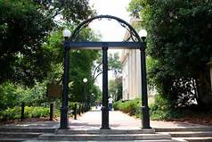

Hello. My name is Dylan Frank and I am a freshman at the Univesity of Georgia. Through the jorney of life, I have experienced many great events that shape who I am. Through my site I will show you some of my events.

I started my life as a flat-lander. I was born in Cape Coral, Forida. I enjoyed Florida. while in Florida I participated in many activities.
some activities were:
Due to Job changes my family and I moved to Blue Ridge, Georgia the summer before my fifth grade year.
In 5th grade, I became a mountaineer when my family moved to Blue Ridge, Georgia. Florida was fun and served its purpose in my development, but BR will always be the place I call home. I have met my life long friends and made memories I will never forget in Blue Ridge. It is so beautiful with plenty of rolling mountains and a big lake. When I moved I picked up many new hobbies and kept old ones.
Some examples are:
My senior year of highschool I got accepted to my dream college, The University of Georgia. I have always been an avid bulldog fan. After graduation and summer, I packed my stuff and moved to Athens.
I have almost completed my first year in Athens and I love it. Although from the mountains, I enjoy the change of pace and scenery the city provides. I like that its not too big like Atlanta. The people at UGA are very friendly. I have engaged in many new activities.
Some of these are:
Although I have only lived in three places, I have been on vacation in other interesting places such as:
These are some of ther other interesting places I have been: